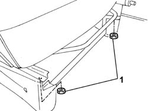
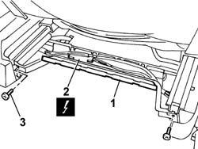
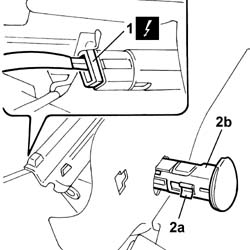
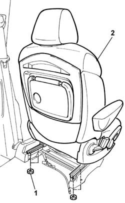

7045A10 L/H OR R/H FRONT SEAT (ONE) - R+R
- Path
- Procedures > 70 FITTINGS > 7045 FRONT SEATS > 7045A FRONT SEAT ASSEMBLY > 7045A10 L/H OR R/H FRONT SEAT (ONE) - R+R
- Kind
- repair procedure (removal / refitting; the operation number is the code)
- Applies to
- all engines; all production periods
- Interactive page
- https://sloeber94.github.io/elrnDB-fUlss/en/#/179007840
Applies to: all engines; all production periods
 Removing
Removing
 Refitting
RefittingOp. 5530B56 BATTERY DRIP TRAY COVER - R.R.
- Disconnect the negative battery terminal.
Op. 7065C56 ODDMENT COMPARTMENT UNDERNEATH FRONT SEATS - R.R.
- Move the seat completely back.
1. Undo the front retaining nuts.

Applies to: all engines; all production periods
- Move the seat completely forward.
1. Open the upper duct cover.
2. Disconnect the Side Bag electrical connection.
3. Undo the fixing bolts, release the duct fromthe wiring and remove it.

Applies to: all engines; all production periods
1. Disconnect the electrical connection.
2. Adjust the clips (2a) and remove the current socket (2b).

Applies to: all engines; all production periods
1. Undo the retaining nuts.
- Release the Side Bag wiring.
2. Remove the seat.

Applies to: all engines; all production periods
Refitting
Removing- Position the seat on the guides.
- Move the seat completely forward.
- Tighten the rear retaining nuts.
- Move the seat completely back.
- Tighten the front retaining nuts.
- Place the current socket in position and secure it.
- Place the duct in position and tighten the fixing bolts.
- Connect the Side Bag electrical connection.
- Connect the current socket electrical connection.
- Position the wiring inside the duct and close the top cover.
Op. 7065C56 ODDMENT COMPARTMENT UNDERNEATH FRONT SEATS - R.R.
- Connect the negative battery terminal.
Op. 5530B56 BATTERY DRIP TRAY COVER - R.R.
- Check the operation of the Side Bag system using the Examiner or other diagnostic equipment.
Topics linked from this page (2)
Topics that link to this page (11)
- 3350E30 LATERAL ACCELERATION AND YAW SENSOR R R
- 5010B39 FRONT CONNECTION FOR CENTRAL AIR DUCT TO REAR SEATS - R R
- 5010B45 DUCT FROM CLIMATE CONTROL SYSTEM - R R
- 5505A66 FRONT, CENTRE OR REAR SUN ROOF (ONE) NODE (DIGITAL NETWORK CONTROL UNIT) - R.R.
- 5580C14 AIR BAG ECU - R+R
- 5580C44 FRONT SIDE BAG MODULE ONE LH OR RH R R
- 7040L17 PASSENGER COMPARTMENT FLOOR FRONT CARPET - R R
- 7045A23 FRONT SEAT MOUNTS - R R
- 7045A36 DRIVERS SEAT MANUAL HEIGHT ADJUSTMENT DEVICE - R R
- 7045J50 DRIVER'S SIDE FRONT SEAT POSITION MEMORISATION SYSTEM ECU - R+R FOLLOWING ELECTRICAL WIRING CHECK
- 7065A14 ANCHORAGE ROD FOR , (ONE), FRONT SEAT BELT LEFT OR RIGHT - R.R.